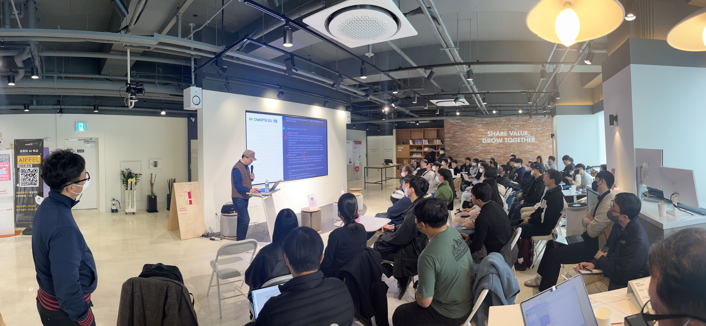
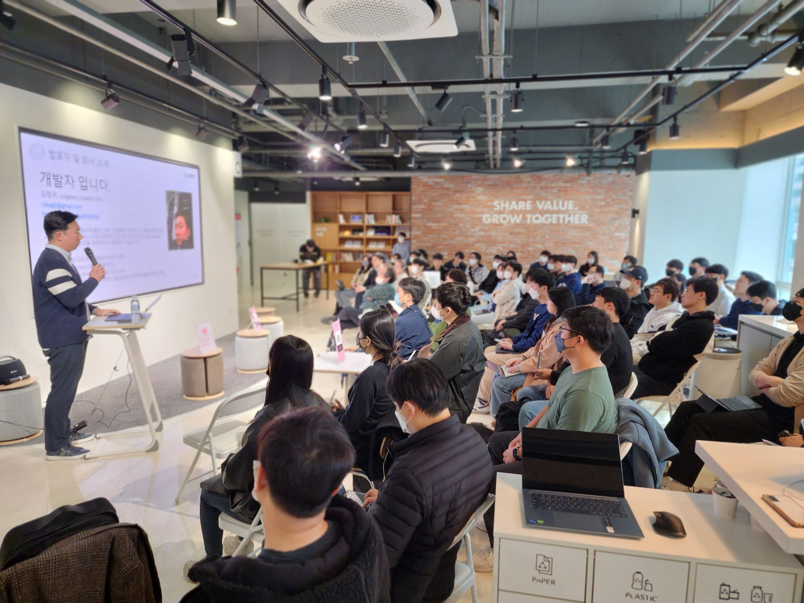
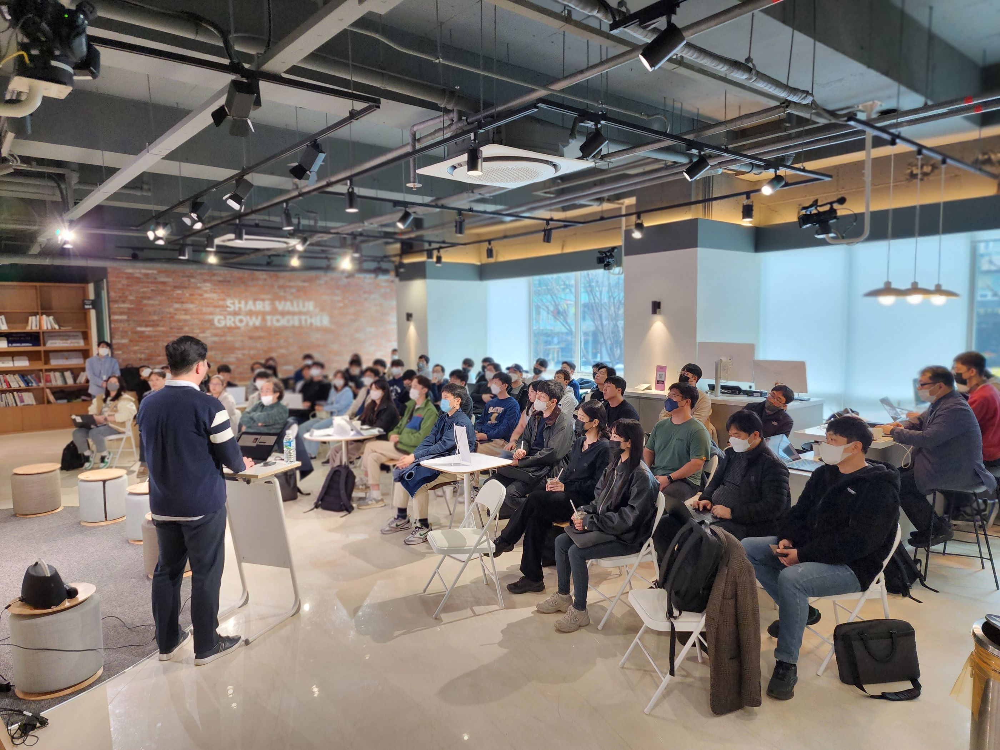
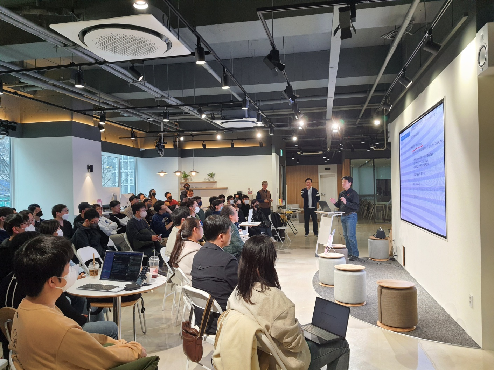
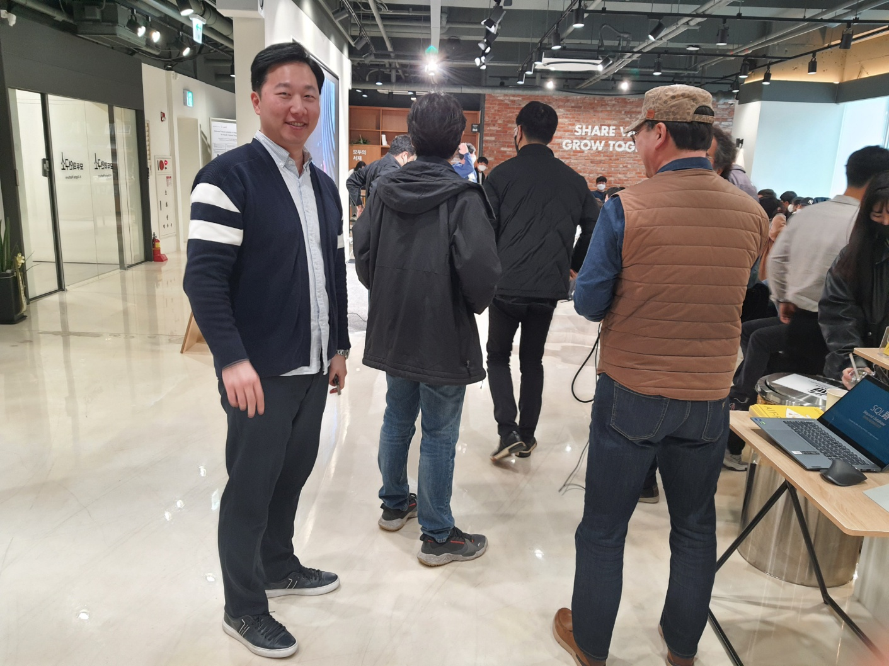

SQL PASS Korea 세미나 발표 - Azure SQL database의 Geo Replica와 Managed Instance의 Failover group을 통한 CQRS 구현
도입
2023년2월 경 시퀄로 김정선 이사님께 내가 “발표할 일 있음 연락주세요” 말씀 드렸다가 막상 “발표해보시겠어요?” 제안 받으니까 걱정되고 두렵다. 비록 나는 DB 전문가는 아니지만 무장적 해보기로 했다. (어떻게든 되겠지ㅎ)
세미나 정보
SQL PASS Korea 세미나 시즌2 - 신청 페이지↗

-
등록 및 교류시간 (PM 1:30 ~ 2:00)
-
SQL PASS Korea 소개 (발표자 김정선 @ PASS Korea Leader)
-
세션-1: Azure SQL database Geo Replica, 또는 Managed Instance의 Failover group을 통한 CQRS 구현 (50분), 김정우 ㈜클라우드메이트
(Level 100) Azure SQL database의 Geo Replica, 또는 Managed Instance의 Failover group을 통해 RW와 Readonly를 간편하게 구성할 수 있습니다. WAS에서 Command(CUD)는 RW로 요청하고, Query(R)는 Readonly로 요청하여 CQRS 패턴을 구현합니다. -
세션-2: SQL Server 2022 차세대 Intelligent Query Processing (50분), 김정선 ㈜씨퀄로
(Level 300)SQL Server 2022의 새로운 기능 중 쿼리 성능 관점에서 핵심이 되는 Intelligent Query Processing(IQP)의 차세대 기능들을 소개합니다. SQL Server 2022로 업그레이드를 준비 중이거나 계획 중인 분들과 SQL Server 기술에 관심 있는 분들에게 도움이 될 것입니다. -
세션-3: SQL Server 2022 Engine Innovations (50분), 김영건 (주)씨퀄로
(Level 200)SQL Server 2022 Engine의 발전된 기능들과 확장된 T-SQL 기능들을 소개합니다. SQL Server 2022로 업그레이드를 준비 중이거나 계획 중인 분들과 SQL Server 기술에 관심 있는 분들에게 도움이 될 것입니다. -
이벤트 & Q/A (당일 상황에 따라 변동될 수 있습니다)
세션 주요 내용
Architecture comparison - Azure SQL Database Geo Replica VS Failover group

Feature comparison - Azure SQL Database Geo Replica VS Failover group

CQRS Pattern - Event Sourcing Pattern.png

Micro service Architecture Basic Design

Azure SQL Database의 Geo Replica 및 Failover Group demo 구성

Azure SQL Managed Instance의 Failover Group demo 구성

Azure SQL Managed Instance의 Failover Group Insights

스냅 사진





발표자료
발표자료 - Azure SQL database의 Geo Replica와 Managed Instance의 Failover group을 통한 CQRS 구현↗
eof